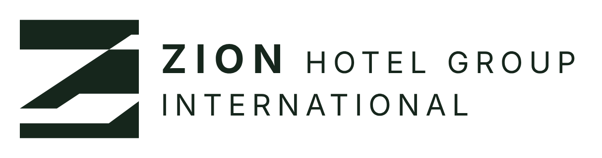

Trilha 1 · Pilar 6 · Aprofundamento · CAPEX
Checklist do CAPEX
Antes de pedir cotação, ao receber as propostas e antes de fechar o número. Marque cada item quando ele estiver feito, por escrito.
1Antes de pedir cotação
As perguntas do terreno
- Distância até o ponto de energia e tipo de rede (a concessionária informa)
- Água: rede, poço ou nascente; vazão; precisa de outorga?
- O solo pede fundação especial?
- Um caminhão chega até as unidades em dia de chuva?
- Declividade do terreno
- Prazo das licenças
O pacote e a especificação
- O mesmo pacote para todos os fornecedores: projeto, memorial descritivo e quantidades
- Especificação escrita: material, medidas, quantidade, frete, instalação, retirada de entulho, prazo e garantia
- Pedido de orçamento aberto por etapa, e não só o valor fechado
- Pedido da lista do que não inclui, por escrito
- Rede pensada para o projeto completo: escrevi para quantas unidades ela será dimensionada
2Ao receber as cotações
Antes de comparar
- Três propostas com a mesma especificação
- Cada proposta traz a lista do que não inclui
- Data anotada em cada proposta; as que passaram de 90 dias foram refeitas
- Estrutura pronta (bolha, domo, cabana pré-fabricada): frete, fundação e montagem confirmados por escrito
- Escolhi a menor só onde o escopo é igual
- Lancei cada proposta na ficha, com a origem: cotação, estimativa ou em branco
Anotações · o que ainda falta cotar e a quem pedir